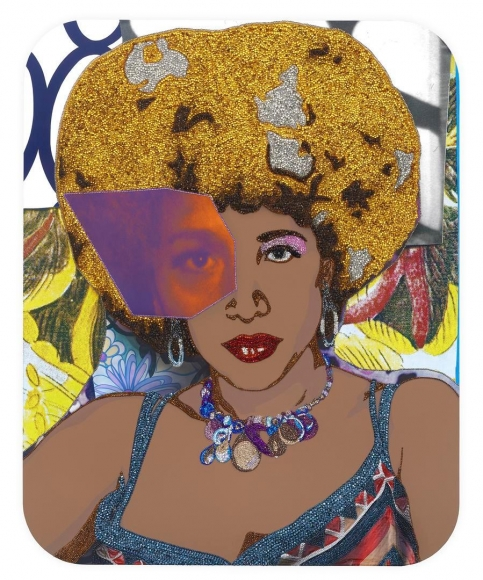
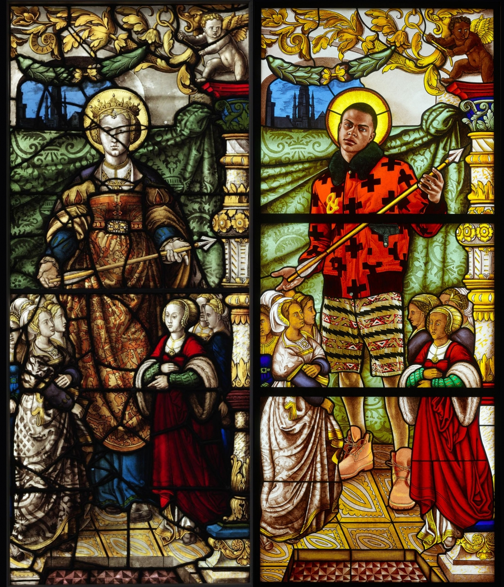

Mickalene Thomas
Mickalene Thomas is a painter, photographer, and videographer based in Brooklyn, New York. She received a B.F.A. from the Pratt Institute in Brooklyn, New York in 2000 and an MFA from Yale University School of Art, New Haven, Connecticut in 2002. Thomas decided to paint pictures of Black women because she wanted to see more positive representations of them in the media and be validated by society. She offers a modern view of feminine sexuality, beauty, and power as a Black woman. She explores gender, identity, and a sense of self as a Black woman (Thomas).
Thomas was selected because her paintings represent Black feminism and gender and sexuality. Her paintings depict Black people as normative, and as beautiful subjects to paint. Many of her paintings are of Black women, and portray a sense of glamor. Black culture is explored within her paintings. She also uses trends in art, such as placing magazine-like pictures over her subjects, in order to convey a sense of contemporary life. There is also abstract shapes, as this would allow her to stylize her paintings more and provide a sense of creativity.
She Ain't A Child No More #2, 2015
High Priestess #2, 2016
Kehinde Wiley
Kehinde Wiley is a painter born in 1977 who is best known for portraits that display African Americans as heroes in Old Master Paintings. He grew up in South Central in Los Angeles, and first experienced art through classes at California State University. He took a six-week art program in Leningrad at 12 years old. After graduating from the Los Angeles County High School for the arts, he received a Bachelor of Fine Arts degree in 1999 and a Master of Fine Arts degree at the School of Art at Yale University. He is passionate about painting and has painted the Rumors of War and The World Stage series. In 2015, he was the recipient of the 2014 National Medal of Arts and was selected by Barack Obama to paint a portrait of him in the Smithsonian National Portrait Gallery (Mancoff).
Kehinde was chosen because his paintings represent the lives of Black people without the intervention of white saviors. He recreated pictures of white men in historical paintings and painted them as Black men living through those times. He also painted historical Black figures in high-art settings. He also repainted Napoleon as a Black figure, recreating history. By painting Black men in white settings, he forces society to view Black men as powerful and rich people. Through his works, he analyzes the interplay between power and masculinity in order to achieve a higher status for Black men.
Mary Comfort of the Afflicted
Saint Ursula and the Virgin Martyr